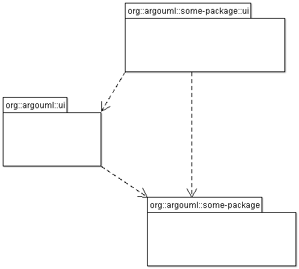

- Purpose
- To provide an infrastructure with menus, tabs and panes available for the other subsystems to fill with actions and contents.
- Located
org.argouml.ui
- Layer
- Facade class
org.argouml.ui.GUI
- Plug-in interface Settings Tab
org.argouml.ui.*
- Plug-in interface Target Manager
org.argouml.ui.targetmanager.?
- Plug-in interface Explorer
org.argouml.ui.explorer.?
Public API
The GUI framework provides the following options
- The menu with actions
- The tool-bar with actions
- The Explorer (formerly called Navigator)
Located in org.argouml.ui.explorer. Contains the tree structure with configurable perspectives.
- Tabbed pane
- Could contain several different panes.
The TargetManager, see below
- The Settings Tab
The GUI subsystem does not contain any knowledge of what is going to be put into the different panes but it has knowledge of parts of the semantics of those components.
How do I...?
The components that want to be placed into any of these register with the GUI subsystem using the appropriate method in org.argouml.ui.GUI.
Other subsystems that supply their own user interface, may be split into 2 packages, e.g. org.argouml.some-package and org.argouml.some-package.ui. In such case the following figure indicates the allowed dependencies:

The presence of the dependency between org.argouml.ui and the org.argouml.some-package is less desired, since it prevents decoupling of the "some-package" as a separate subsystem. Some future optimalisation should remove this dependency.
The TargetManager
Located in org.argouml.ui.targetmanager.
The purpose of the targetmanager is to have a central spot to manage the list of current targets.
The target of ArgoUML is the element currently selected by the user. This can either be a UML element (an Interface or a Class for example) but it can also be a diagram or anything that is shown on a diagram.
There can be multiple targets in case someone selected multiple items in the explorer or on the diagram. This can be done by shift-clicking or Ctrl-clicking items, or by drawing a box on the diagram around the items to select.
In case multiple targets are selected, the target manager will add each target to the beginning of the list of targets. This way, the first item of the list is the last selected item. Most functions in ArgoUML work on all selected items. However, a few (intentionally) only work on one target, such as the properties panels.
Thanks to the architecture of ArgoUML of Modelelements and Figs, one rule has been decided upon: The list of targets shall not contain any Fig that has an owner. Instead, the owner is enlisted.
The TargetManager is also the manager of the history of targets. Every time the user (or the program) selects a new target, this is recorded in the history. Via navigateBack and navigateForward, the user can browse through the history just like in an ordinary internet browser.
Via an event mechanism this manager makes sure that all objects interested in knowing whether the selection changed are notified.
The TargetManager does not depend on the org.argouml.ui package, nor any of its sub-packages. Hence, it can be used by all of these to modify the target, or get it.
In a discussion on the dev list, it has been decided that the TargetManager is GUI state, and hence shall be a part of the GUI subsystem, and should not be used anywhere outside the GUI subsystem. However, currently the TargetManager is used in other subsystems, e.g. the Project. Hence, this needs refactoring.
Design of the subsystem
This subsystem has no knowledge of UML, Critics, Diagrams, or Model.
Used sybsystems
This is implemented directly on top of Swing and Java.